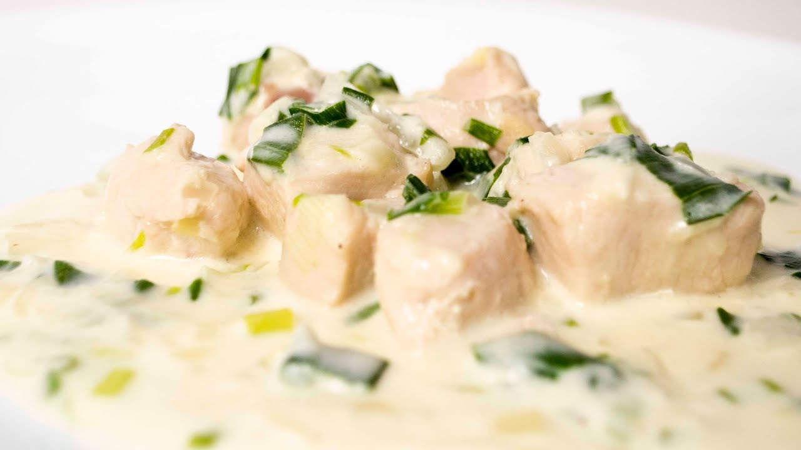

Pollo al Verdeo

Descripción
La receta es muy sencilla de hacer y no demanda demasiado tiempo en preparación, pero sobre todo es un plato exquisito y bien Argentino
Ingredientes
- Cebolla
- Cebolla de Verdeo
- Crema
- Morron
- Ajo
- Pollo
- Condimentos varios
- Caldo
Los pasos a seguir son los siguientes:
- Primero cortamos cebolla, morron y ajo en cubos
- Rehogamos esto en una sartén con aceite de oliva
- Añadimos sal pimienta, nuez moscada y condimentos a gustos
- Luego añadimos el pollo previamente sellado
- Agregamos un poco de caldo
- Cocinamos por aproximadamente 20 minutos tapado
- Destapamos y agregamos la crema
- Disfrutamos